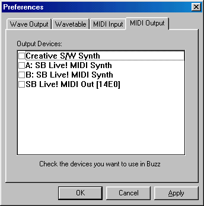

The last configuration option in Aldrin is one you will most likely ignore.
MIDI Out are supported in a few machines. One of them is called the "vMIDIOut" Machine.
This machine allows you to control external gear with Aldrin. If this interests
you, you must simply select the devices you would like to test from the
list.
Once you click apply, these devices will be available in the vMIDIOut machine.
